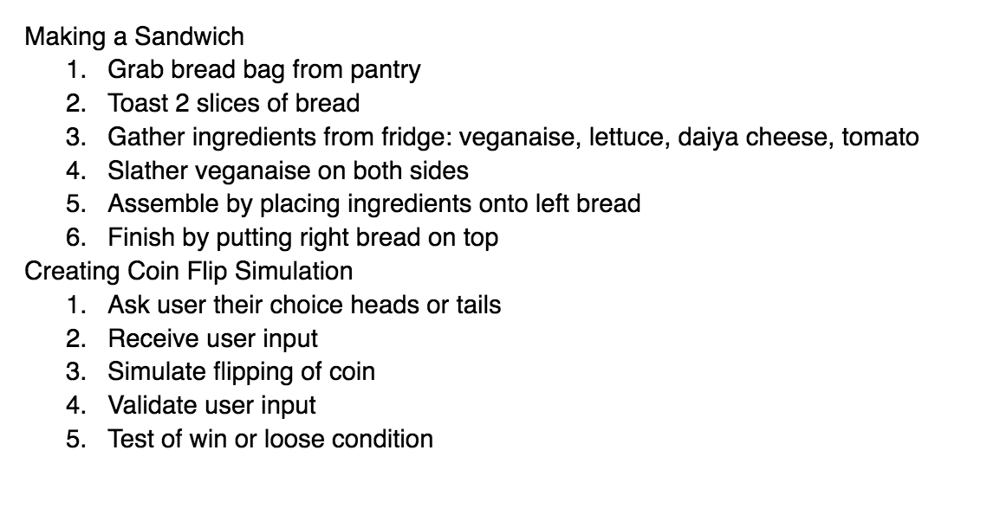
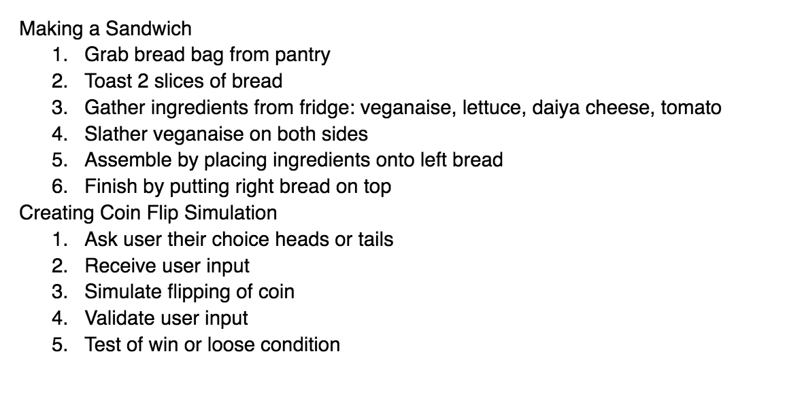

This lab has required us to create pseudocode for an everyday task and a computer task. We did so and then implemented it in our javascript.
We had some issues in understanding the difference between where our everyday pseudocode and our task pseudocode is supposed to be.
Well hopefuly you are able to see our index.htm file that we have created, and everyhthing is swell.
 

The lists above are our pseudocode examples. One is a everyday task about sandwich making. The other is our lab 4 example for a coinflipping simulation.